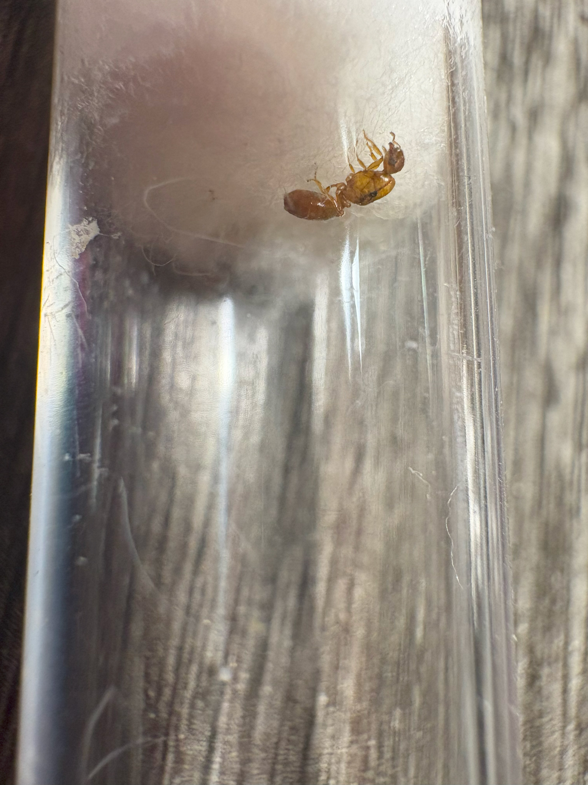
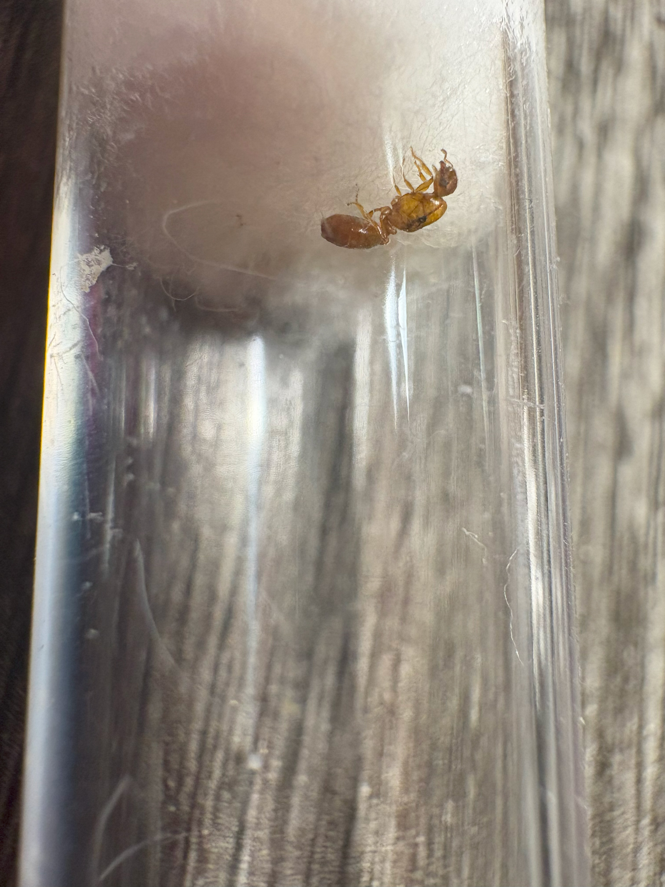
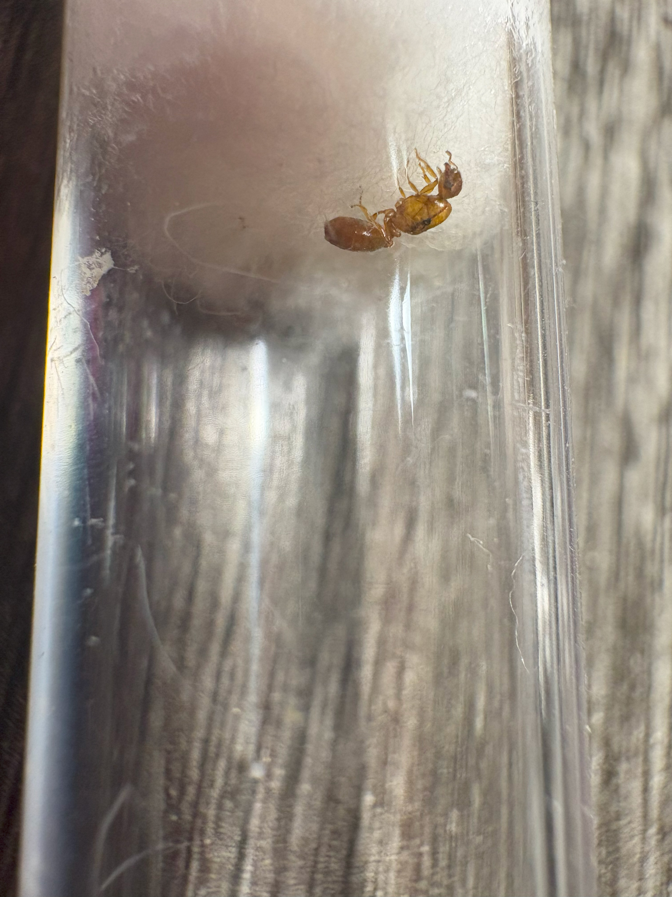

A small orange queen found in Utah: Likely a Solenopsis aurea, Solenopsis carolinensis, or a Solenopsis molesta queen:
Credit: Pictures taken by me
This page will be updated over time with pictures of wild ants that don't get there own dedicated page. Information on each ant may vary depending on how easy they are to identify and where I took the pictures. Pictures can be from anywhere around the world.
An Odontomachus insularis worker in St Marrten:
Credit: Pictures taken by me
See a video of this worker that I took here!

A small orange queen found in Utah: Likely a Solenopsis aurea, Solenopsis carolinensis, or a Solenopsis molesta queen:
Credit: Pictures taken by me